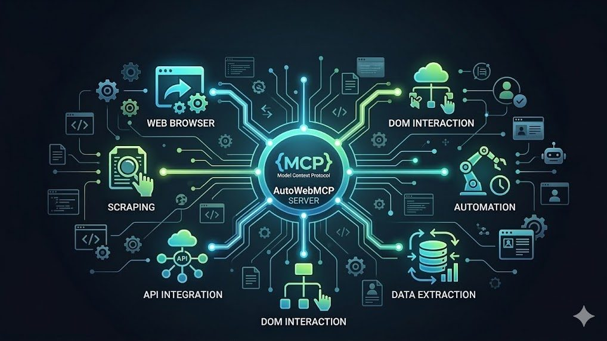

The End of Software Engineering as We Know It
How AI changes software work from manual production toward direction, constraints, and fast iteration loops.
All posts are listed here and can be filtered by theme. A post can belong to multiple themes.
How AI changes software work from manual production toward direction, constraints, and fast iteration loops.

What happens when code still exists, but understanding and change increasingly flow through an AI layer.

A practical framing of LLM-native development where the core skill is steering generated systems.

How model-driven portability is shifting long-standing platform dependency patterns in software ecosystems.

Why technical documentation must adapt when both humans and AI are active consumers of system context.

A product strategy view of uncertainty, evidence, and economics in AI-native systems.

How uncertain outputs reshape roadmap decisions, QA assumptions, and feature boundaries.

Why product value in AI depends on continuous data loops, not only feature delivery.

A case for innovation-first learning in computer science education under rapid AI change.

Why evaluation must shift from answer production to reasoning, framing, and critical validation.

How low-cost plausibility generation changes both research output and researcher training.

A practical project brief on turning repeated browser workflows into reusable agent tools.

A project idea for embedding language learning directly in reading and workflow contexts.

Project write-up for provider-agnostic model integration in real production scenarios.

A compact project brief on generative summarization UX through comic-first interaction.
Project-focused debugging approach based on trace evidence rather than static code inspection.